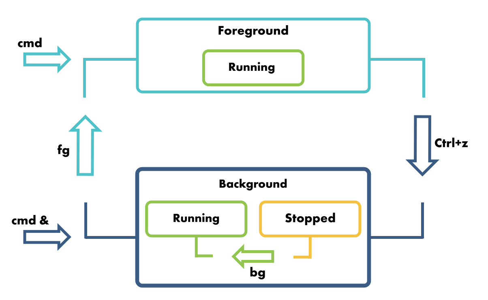

2. Rularea aplicațiilor¶
Pornirea unei aplicații înseamnă că se alocă resursele sistemului (procesor, memorie, dispozitive de intrare/ieșire) pentru a rula aplicația. O aplicație care rulează, adică folosește resursele sistemului pentru a executa cod și a prelucra date, se numește proces. Atunci când pornim o aplicație se creează un proces; atunci când oprim aplicația sau își încheie execuția ne referim la încheierea execuției procesului.
Procesul este pornit dintr-un fișier executabil care conține codul (instrucțiunile) și datele aplicației. Fișierul executabil mai este numit și imaginea procesului. Fișierul executabil este un program. Spunem că procesul este un program aflat în execuție.
Momentul creării unui proces dintr-un fișier executabil, prin încărcarea codului și datelor fișierului executabil în memorie, se numește load-time. Rularea procesului și folosirea resurselor sistemului se numește run-time.
2.1. Investigarea proceselor¶
Un sistem de operare are de obicei mai multe aplicații care rulează, deci mai multe procese. Fiecare proces are un anumit rol: un browser este folosit pentru a naviga pe Internet, un shell primește comenzi de la utilizator, un serviciu de rețea asigură configurarea parametrilor de rețea, un serviciu jurnalizează mesajele din sistem.
Prea multe procese pot duce la o încărcare prea mare a sistemului, încetinind sau împiedicând funcționarea acestuia. Anumite procese pot consuma excesiv resurse afectând celelalte procese. De aceea, este util să investigăm procesele unui sistem și consumul de resurse al acestora.
2.1.1. Listarea proceselor¶
La nivel mai degrabă didactic, putem vizualiza lista de procese a unui sistem.
Utilitarul ps afișează procesele curente în sistem (un snapshot al proceselor sistemului).
La o rulare simplă, utilitarul ps afișează procesele din terminalul curent:
student@uso:~$ ps
PID TTY TIME CMD
14897 pts/4 00:00:00 bash
14910 pts/4 00:00:00 ps
În terminalul curent (indicat de coloana TTY din afișare, adică terminalul pts/4) sunt două procese:
procesul shell (
bash) în care rulăm comenzi care creează noi procese;procesul de listare (
ps) pe care tocmai l-am lansat prin comandaps; practic se afișează pe sine
Pentru a afișa toate procesele sistemului folosim opțiunea -e (pentru everything) a utilitarului ps ca în comanda de mai jos:
student@uso:~$ ps -e
PID TTY TIME CMD
1 ? 00:00:19 systemd
2 ? 00:00:00 kthreadd
4 ? 00:00:00 kworker/0:0H
6 ? 00:00:00 mm_percpu_wq
7 ? 00:00:09 ksoftirqd/0
8 ? 00:00:06 rcu_sched
9 ? 00:00:00 rcu_bh
10 ? 00:00:00 migration/0
11 ? 00:00:00 watchdog/0
[...]
2.1.2. Ierarhia proceselor¶
Un proces este creat de un alt proces.
De exemplu, mai sus, procesul ps a fost creat dintr-un proces shell (bash).
Procesul shell a fost, la rândul său, creat de un alt proces.
Un proces are un proces părinte; un proces poate avea mai multe procese copil.
Procesele sunt, așadar, parte dintr-o ierarhie.
Pentru a vizualiza ierarhia de procese, folosim utilitarul pstree:
student@uso:~$ pstree
systemd-+-ModemManager---2*[{ModemManager}]
|-NetworkManager-+-2*[dhclient]
| `-2*[{NetworkManager}]
[...]
|-acpid
|-avahi-daemon---avahi-daemon
|-boltd---2*[{boltd}]
|-colord---2*[{colord}]
|-cron
[...]
|-systemd-+-(sd-pam)
| |-gnome-terminal--+-bash
| | `-3*[{gnome-terminal-}]
[...]
În vârful ierarhiei de procese este procesul numit clasic init.
În listarea de mai sus vedem că procesul din vârful ierarhiei este systemd.
systemd 1 este implementarea de init prezentă în cea mai mare parte a distribuțiilor Linux curente.
Note
Procesul init va exista în permanență în vârful ierarhiei de procese, indiferent de faptul că se va numi systemd, init, upstart sau altfel.
2.1.3. Atributele proceselor¶
Utilitarul ps are o afișare tabelară a proceselor, fiecare coloană corespunzând unui atribut al proceselor.
La o rulare simplă, așa cum am văzut mai sus sunt afișate patru coloane:
PID: reprezentând identificatorul procesuluiTTY: terminalul în care rulează procesul (apare?pentru un proces care nu are terminal - în general procesele de tip serviciu, numite și procese daemon nu au terminal)TIME: timpul de rulare pe procesor (în ore, minute, secunde)CMD: numele imaginii de proces (adică numele executabilului / programului din care a fost creat procesul)
2.1.3.1. Identificarea unui proces¶
PID (Process Id) este atributul esențial al procesului, un index care identifică procesul la nivelul sistemului.
Un proces este identificat după PID, nu după numele executabilului (CMD).
Putem avea mai multe procese create din același executabil, fiecare proces având PID-ul său.
Este impropriu să spunem “procesul bash”; corect este “un proces creat din programul / executabilul bash” sau “procesul cu PID-ul XY”.
Cu toate acestea vom folosi în general expresia “procesul bash” pentru că reiese din context despre ce proces este vorba.
Pentru a verifica existența mai multor procese, o să creăm mai multe procesele shell.
Pentru început deschideți mai multe sesiuni de terminal, folosind, de exemplu, Alt+F2 în mediul grafic și introducând comanda gnome-terminal în promptul creat.
Apoi vizualizăm doar procesele create din executabilul bash rulând comanda:
student@uso:~$ ps -e | grep bash
2181 pts/1 00:00:00 bash
2194 pts/2 00:00:00 bash
2205 pts/3 00:00:00 bash
14750 pts/0 00:00:00 bash
14897 pts/4 00:00:00 bash
Obținem un rezultat precum cel de mai sus.
Sunt cinci procese, toate create din executabilul bash, cu cinci PID-uri diferite: 2181, 2194, 2205, 14705, 14879.
Deși tehnic incorect, din rațiuni de expeditivitate și pentru că, în general, nu produce ambiguitate vom folosi formularea “procesul bash” în loc de “procesul cu PID-ul XY creat din executabilul bash”.
2.1.3.2. Afișarea atributelor unui proces¶
Un proces are mai mult decât cele patru atribute afișate la o rulare simplă a utilitarului ps.
Pentru a afișa mai multe atribute folosim opțiunea -f (de la full format) sau opțiunea -F (de la extra full format), ca mai jos:
student@uso:~$ ps -f
UID PID PPID C STIME TTY TIME CMD
student 14897 14896 0 17:12 pts/4 00:00:00 -bash
student 15026 14897 0 17:46 pts/4 00:00:00 ps -f
student@uso:~$ ps -F
UID PID PPID C SZ RSS PSR STIME TTY TIME CMD
student 14897 14896 0 6056 5136 0 17:12 pts/4 00:00:00 -bash
student 15027 14897 0 9728 3340 0 17:46 pts/4 00:00:00 ps -F
Desigur, putem să combinăm aceste opțiuni cu opțiunea -e de afișare a tuturor proceselor:
student@uso:~$ ps -ef
UID PID PPID C STIME TTY TIME CMD
root 1 0 0 Aug18 ? 00:00:19 /lib/systemd/systemd --system --deserialize 39
root 2 0 0 Aug18 ? 00:00:00 [kthreadd]
root 4 2 0 Aug18 ? 00:00:00 [kworker/0:0H]
root 6 2 0 Aug18 ? 00:00:00 [mm_percpu_wq]
root 7 2 0 Aug18 ? 00:00:09 [ksoftirqd/0]
root 8 2 0 Aug18 ? 00:00:06 [rcu_sched]
root 9 2 0 Aug18 ? 00:00:00 [rcu_bh]
root 10 2 0 Aug18 ? 00:00:00 [migration/0]
root 11 2 0 Aug18 ? 00:00:00 [watchdog/0]
[...]
Opțiunile -f și -F afișează și alte atribute ale procesului, precum:
UID: numele utilizatorului care deține procesulPPID: identificatorul procesului părinteC: procentul de procesor ocupatSTIME: timpul de pornire (start time)RSS: memoria RAM ocupată (resident set size)
Astfel de atribute sunt utile pentru a vedea care sunt procesele cele mai consumatoare de resurse (de exemplu procesor sau memorie).
2.1.3.3. Afișarea anumitor atribute ale proceselor¶
Pentru afișarea selectivă a anumitor atribute ale unui proces, folosim opțiunea -o a utilitarului ps ca mai jos:
student@uso:~$ ps -e -o pid,ppid,user | head
PID PPID USER
1 0 root
2 0 root
4 2 root
6 2 root
7 2 root
8 2 root
9 2 root
10 2 root
11 2 root
[...]
student@uso:~$ ps -e -o pid,ppid,user,%cpu,%mem,cmd
PID PPID USER %CPU %MEM CMD
1 0 root 0.0 0.4 /lib/systemd/systemd --system --deserialize 39
2 0 root 0.0 0.0 [kthreadd]
4 2 root 0.0 0.0 [kworker/0:0H]
6 2 root 0.0 0.0 [mm_percpu_wq]
7 2 root 0.0 0.0 [ksoftirqd/0]
8 2 root 0.0 0.0 [rcu_sched]
9 2 root 0.0 0.0 [rcu_bh]
10 2 root 0.0 0.0 [migration/0]
11 2 root 0.0 0.0 [watchdog/0]
[...]
student@uso:~$ ps -e -o pid,ppid,user,%cpu,%mem,cputime,cmd | head
PID PPID USER %CPU %MEM TIME CMD
1 0 root 0.0 0.4 00:00:19 /lib/systemd/systemd --system --deserialize 39
2 0 root 0.0 0.0 00:00:00 [kthreadd]
4 2 root 0.0 0.0 00:00:00 [kworker/0:0H]
6 2 root 0.0 0.0 00:00:00 [mm_percpu_wq]
7 2 root 0.0 0.0 00:00:09 [ksoftirqd/0]
8 2 root 0.0 0.0 00:00:06 [rcu_sched]
9 2 root 0.0 0.0 00:00:00 [rcu_bh]
10 2 root 0.0 0.0 00:00:00 [migration/0]
11 2 root 0.0 0.0 00:00:00 [watchdog/0]
Opțiunea -o este urmată de numele atributelor pe care vrem să le afișăm. În comenzile de mai sus am afișat:
pid: PID-ul procesuluippid: PID-ul procesului părinteuser: numele utilizatorului care deține procesul%cpu: procentul de procesor ocupat%mem: procentul de memorie ocupatăcputime: timpul de rulare efectivă pe procesorcmd: numele complet al comenzii folosite
2.1.3.4. Sortarea după atributele proceselor¶
Afișarea atributelor proceselor este utilă mai ales pentru a vedea procesele cele mai consumatoare de resurse. Este util să afișăm procesele sortate după un astfel de atribut, precum consumul de memorie sau consumul de procesor. Astfel, pentru a afișa atributele PID, PPID și consumul de procesor pentru procesele sistemului, sortate după consumul de procesor, folosim comanda:
student@uso:~$ ps -e -o pid,ppid,%cpu --sort %cpu
PID PPID %CPU
1 0 0.0
2 0 0.0
4 2 0.0
6 2 0.0
7 2 0.0
8 2 0.0
9 2 0.0
10 2 0.0
11 2 0.0
[...]
În comanda de mai sus, opțiunea --sort a utilitarului ps urmată de un atribut va afișa procesele sortate crescător după acel atribut.
În cazul de față atributul este %cpu adică procentajul de procesor consumat.
Mai relevant este să vedem la început procesele cele mai consumatoare, așa că putem folosi opțiunea de sortare descrescătoare:
student@uso:~$ ps -e -o pid,ppid,%cpu --sort -%cpu
PID PPID %CPU
1309 1150 0.7
1278 1277 0.2
1139 1137 0.1
1 0 0.0
2 0 0.0
4 2 0.0
6 2 0.0
7 2 0.0
8 2 0.0
[...]
În comanda de mai sus, prefixarea atributului de după opțiunea -sort cu semnul - (minus) duce la o afișare a proceselor sortate descrescător după acel atribut.
Pentru că, în general, dorim să vedem doar primele procese consumatoare de resurse putem filtra rezultatul comenzii prin utilitarul head:
student@uso:~$ ps -e -o pid,ppid,%cpu --sort -%cpu | head -6
PID PPID %CPU
1309 1150 0.7
1278 1277 0.2
1139 1137 0.1
1 0 0.0
2 0 0.0
În comanda de mai sus am extras doar primele 6 linii din afișare cu ajutorul utilitarului head.
Prima linia este capul de tabel al afișării și apoi urmează cele 5 procese din sistem care consumă cel mai mult procesor.
2.1.3.5. Exerciții: Afișarea atributelor proceselor¶
Important
Reparcurgeți comenzile de mai sus care conțin opțiunile frecvente pentru utilitarul ps.
Apoi realizați exercițiile din continuare.
Folosiți utilitarul ps pentru a afișa, pentru toate procesele sistemului, următoarele atribute:
PID, PPID, procentul de procesor, comanda completă (cu argumente)
PID, PPID, procentul de procesor, comanda simplă (fără argumente)
numele utilizatorului, PID, procentul de procesor, timpul de procesor, timpul de start, comanda simplă
numele utilizatorului, PID, procentul de procesor, timpul de procesor, timpul de start, comanda simplă - sortate descrescător după procentul de procesor
PID, PPID, procentul de procesor, procentul de memorie, comanda completă
PID, PPID, procentul de procesor, procentul de memorie, comanda completă - sortate crescător după procentul de memorie
2.1.4. Selectarea proceselor după anumite atribute¶
Mai sus am prezentat un scenariu uzual de folosire a utilitarului ps: afișarea proceselor care consumă cele mai multe resurse ale sistemului.
Un alt scenariu este să filtrăm procesele afișate după un atribut.
De exemplu, procesele doar care aparțin utilizatorului student, ca în comanda de mai jos:
student@uso:~$ ps -u student
PID TTY TIME CMD
1100 ? 00:00:00 systemd
1101 ? 00:00:00 (sd-pam)
1133 ? 00:00:00 gnome-keyring-d
1137 tty1 00:00:00 gdm-x-session
1139 tty1 00:00:15 Xorg
1146 ? 00:00:00 dbus-daemon
1150 tty1 00:00:00 gnome-session-b
1248 ? 00:00:00 VBoxClient
1249 ? 00:00:00 VBoxClient
[...]
Sau doar procesele Bash (create din executabilul bash) ca mai jos:
student@uso:~$ ps -C bash
PID TTY TIME CMD
3467 pts/0 00:00:00 bash
8386 pts/1 00:00:00 bash
Așa cum vedem mai sus, utilitarul ps are diferite opțiuni care permit selectarea proceselor afișate după anumite atribute.
Opțiunea -u selectează procesele aparținând utilizatorului primit ca argument (în cazul comenzii de mai sus student).
Opțiunea -C selectează procesele care au comanda primită ca parametru (în cazul comenzii de mai sus bash).
2.1.4.1. Selectarea proceselor după procesul părinte¶
Folosiți utilitarul ps pentru a afișa doar procesele care au ca părinte procesul cu PID-ul 1.
Actualizați comanda de mai sus ca să afișeze atributele PID, PPID, consum de memorie și comandă completă (cu argumente) pentru procesele care au ca părinte procesul cu PID-ul 1.
2.1.4.2. Selectarea proceselor care nu aparțin unui utilizator¶
Folosiți utilitarul ps pentru a afișa doar procesele care NU aparțin utilizatorului student.
Actualizați comanda de mai sus ca să afișeze atributele PID, PPID, consum de procesor și comandă simplă (fără argumente) pentru procesele care NU aparțin utilizatorului student.
2.1.5. Sumar: Investigarea proceselor¶
Aplicații care rulează sunt procese.
Procesele consumă resursele sistemului.
Pentru a vizualiza și investiga procesele sistemului folosim utilitarul ps.
Utilitarul ps are opțiuni pentru afișarea selectivă a proceselor sistemului și a atributelor acestuia.
Putem sorta procesele afișate după anumite atribute, util pentru a selecta procesele cele mai consumatoare de resurse.
2.2. Monitorizarea proceselor¶
Utilitarul ps afișează procesele și atributele acestora la un moment dat, un snapshot al proceselor sistemului.
De multe ori ne interesează și evoluția în timp a proceselor: schimbarea în consumul de resurse, apariția de noi procese.
Adică să monitorizăm procesele.
Monitorizarea proceselor înseamnă obținerea periodică de informații despre procese.
Evident, un mod simplu de monitorizare este să folosim rulăm utilitarul ps periodic.
Există, însă, utilitare dedicate pentru monitorizare.
2.2.1. Monitorizarea folosind top¶
Utilitarul top este utilitarul de bază de monitorizare a proceselor în lumea Linux.
Este echivalent Task Manager din Windows.
Rularea top duce la afișarea, în terminal, a proceselor sistemului și reîmprospătarea informației periodic (implicit 2 secunde).
Imaginea de mai jos este o fereastră de terminal cu rularea top:

top afișează informații periodice despre procese și despre starea sistemului: consum de procesor, de memorie.
La fiecare perioadă (implicit 2 secunde) informația afișată este reîmprospătată.
top este un utilitar interactiv.
Adică în timpul rulării sale utilizatorul poate interacționa cu procesele sau poate modifica informațiile afișate.
De exemplu, folosirea tastei M într-o rulare top afișează procesele sortate după consumul de memorie.
Un sumar al comenzilor interactive din top se obține folosind tasta ?.
La fel ca în cazul utilitarului less, ieșirea din utilitarul top se realizează folosind tasta q.
2.2.2. Utilitarul htop¶
Un utilitar similar top ceva mai prietenos este utilitarul htop.
La fel ca în cazul top, utilitarul htop rulează în linia de comandă prin introducerea comenzii htop și pornește, în terminal, o fereastră interactivă, ca în imaginea de mai jos:
htop este, de asemenea, un utilitar interactiv, un sumar al comenzilor ce pot fi folosite fiind prezentat în bara de jos a ferestrei sale.
De exemplu, așa cum vedem și în imaginea de mai sus, cu ajutorul tastei F6 putem alege un atribut după care să sortăm procesele.
2.2.3. Alte utilitare de monitorizare¶
Monitorizarea proceselor este o activitate foarte importantă în administrarea unui sistem de calcul. Un proces care, intenționat sau nu, consumă abuziv resursele sistemului va duce la o proastă funcționare sau chiar la blocarea sistemului. De aceea, utilitarele de monitorizare a sistemului (și a proceselor) sunt diverse. Amintim:
iotop: utilitar pentru monitorizarea consumului de I/O al proceselorsysstat: o suită de utilitare pentru monitorizarea sistemului (procese, memorie, I/O, rețea)
2.3. Identificarea proceselor¶
Pentru a lucra punctual cu un proces, trebuie să aflăm PID-ul acestuia. Un scenariu uzual este omorârea unui proces, acțiune pentru care vom avea nevoie de PID-ul acestuia, cum vom vedea în Oprirea și suspendarea proceselor. Semnale.
2.3.1. Folosirea ps pentru aflarea PID-ului¶
Un prim mod de a afla PID-ului unui proces este prin folosi utilitarului ps care afișează procesele sistemului, incluzând PID-urile acestora.
De exemplu dacă dorim să aflăm PID-ul / PID-urile procesului bash vom folosi comenzi precum cele de mai jos:
student@uso:~$ ps -e | grep bash
3467 pts/0 00:00:00 bash
8386 pts/1 00:00:00 bash
9477 pts/2 00:00:00 bash
9487 pts/3 00:00:00 bash
9959 pts/4 00:00:00 bash
student@uso:~$ ps -C bash
PID TTY TIME CMD
3467 pts/0 00:00:00 bash
8386 pts/1 00:00:00 bash
9477 pts/2 00:00:00 bash
9487 pts/3 00:00:00 bash
9959 pts/4 00:00:00 bash
În rezultatul comenzilor de mai sus urmărim coloana PID care conține PID-urile proceselor.
2.3.2. Aflarea PID-ului unui proces¶
O variantă mai simplă și mai directă pentru aflarea PID-ului este folosirea utilitarului pidof ca mai jos:
student@uso:~$ pidof bash
8386 3467
student@uso:~$ pidof firefox
8994 8981 8928 8904 8830
student@uso:~$ pidof perl
4780
Utilitarul pidof primește ca argument numele unui program și afișează PID-urile tuturor procesele pornite din acel program.
pidof este util atunci când avem un singur proces pornit dintr-un program și dorim să-l identificăm.
Dacă avem mai multe procese, rezultând în mai multe PID-uri, atunci va trebui sa detaliem procesele și să folosim utilitarul ps, lucru pe care am fi putut să-l facem de la început.
Un utilitar mai puternic de identificare a proceselor este utilitarul pgrep:
1 2 3 4 5 6 7 8 9 10 11 12 13 14 15 | student@uso:~$ pgrep bash
3467
8386
student@uso:~$ pgrep -u student
1100
1101
1133
[...]
student@uso:~$ pgrep -P 1
212
272
295
[...]
|
În forma simplă, similară pidof, așa cum vedem în linia 1 din afișarea de mai sus, utilitarul pgrep afișează PID-urile proceselor create din programul primit ca argumente.
În alte forme, pgrep afișează PID-urile proceselor aparținând unui utilizator (linia 5) sau PID-urile proceselor care au ca părinte procesul cu PID-ul 1 (linia 11).
Alte opțiuni permit selectarea după alte condiții.
Note
Utilitarele pgrep și pidof afișează doar PID-urile proceselor fără alte informații.
Acest lucru le face utile în practică în scripturi care conțin comenzi care au nevoie doar de PID-urile proceselor.
2.3.3. Afișarea PID-ului unui proces ținând cont de comanda completă¶
O opțiune utilă a comenzii pgrep este -f care permite afișarea PID-urilor proceselor după comanda completă, nu doar după numele executabilului, ca mai jos:
1 2 3 4 5 6 7 8 9 10 11 | student@uso:~$ pgrep shutter
4780
student@uso:~$ pgrep perl
student@uso:~$ ps -f -C shutter
UID PID PPID C STIME TTY TIME CMD
student 4780 1309 0 12:53 tty1 00:00:02 /usr/bin/perl /usr/bin/shutter
student@uso:~$ pgrep -f perl
4780
|
Mai sus există procesul cu PID-ul 4780 a cărui comandă completă este /usr/bin/perl /usr/bin/shutter.
Atunci când primește argumentul shutter, comanda pgrep afișează PID-ul procesului (liniile 1-2); dar atunci când primește argumentul perl, comanda pgrep nu afișează nimic (linia 4).
Acest lucru se întâmplă pentru că se folosește doar numele programului, nu comanda completă, cu argumente.
Dar, atunci când folosim opțiunea -f (liniile 10-11), se afișează PID-ul procesului și când argumentul transmis nu este numele programului, dar este parte din comanda completă.
2.3.3.1. Exercițiu: Afișarea PID-ului unui proces după comandă¶
Afișați PID-urile proceselor din sistem pornite cu ajutorul Python.
Adică să cautați după șirul python în toate procesele sistemului.
2.3.4. Exerciții: Identificarea proceselor¶
2.3.4.1. Identificarea unui proces după comandă¶
Într-o fereastră de terminal rulați comanda:
student@uso:~$ sleep 60
Comanda va porni un proces sleep care se va încheia după 60 de secunde.
Afișați, din alt terminal, PID-ul procesului.
Apoi, porniți, pe două terminale, două procese sleep folosind comanda de mai sus.
Afișați din nou, din alt terminal (al treilea), PID-urile celor două procese.
2.3.4.2. Identificarea proceselor curente¶
Aflați PID-ul/PID-urile pentru:
procesul/procesele
sshdprocesele utilizatorului
studentprocesele care au ca părinte procesul cu PID-ul
1procesul/procesele
dhclient
2.3.4.3. Pornirea și identificarea proceselor¶
Porniți o aplicație shutter.
Aflați PID-ul procesului nou creat.
Porniți o aplicație libreoffice.
Aflați PID-ul procesului nou creat (pot fi mai multe).
Porniți o aplicație firefox.
Aflați PID-ul procesului nou creat (pot fi mai multe).
Porniți o aplicație transmission-gtk.
Aflați PID-ul procesului nou creat (pot fi mai multe).
2.3.5. Sumar: Identificarea proceselor¶
Un proces este identificat de PID (Process Identifier).
Putem folosi ps pentru a obține PID-ul unui proces sau a unor procese.
Dacă ne interesează doar PID-ul folosim utilitarele pidof sau pgrep.
Utilitarul pgrep permite identificarea proceselor după atributele sale, precum după utilizatorul care le deține, procesul părinte sau un subșir din comanda completă.
În general vom folosi utilitarul ps pentru a obține PID-ul proceselor.
Utilitarele pidof și pgrep sunt utile în scripturi sau combinații de comenzi care necesită doar PID-ul unui proces.
2.4. Oprirea și suspendarea proceselor. Semnale¶
Odată pornit, un proces rulează și consumă resursele sistemului. După ce execută codul din executabilul corespunzător, procesul își încheie execuția și eliberează resursele consumate. Dar anumite programe (de exemplu serverele) nu au un punct de oprire, ci rulează într-o buclă, teoretic la infinit. La fel, anumite programe (de exemplu un browser web) sunt interactive și își încheie execuția doar la acțiunea explicită a utilizatorului.
Deosebim astfel între următoarele tipuri de oprire a unui proces:
Procesul ajunge la sfârșitul codului programului și își încheie execuția.
Un comportament neașteptat sau o eroare în funcționarea programului cauzează încheierea execuției acestuia (crash).
Utilizatorul execută o acțiune interactivă care trimite comanda de încheierea execuției procesului: de exemplu folosirea tastei
qpentru a încheia un procestopsau folosirea butonuluixdintr-o aplicație grafică pentru a încheia execuția acesteia.Utilizatorul sau sistemul de operare decide că un proces nu rulează corespunzător și decide terminarea acestuia.
Ultimul punct din pasul de mai sus, numit și terminarea unui proces (sau, informal, omorârea unui proces) este realizat, în Linux, prin folosirea semnalelor.
2.4.1. Folosirea semnalelor pentru omorârea proceselor¶
Ca să terminăm forțat (omorâm) un proces folosim semnale. Un semnal este o notificare trimisă de utilizator sau de sistemul de operare către un proces. Nu este obligatoriu ca un semnal să omoare procesul care îl primește, dar este cel mai des întâlnit comportament, și principala utilizare a semnalelor.
Ca să trimitem un semnal unui proces trebuie să știm PID-ul acestuia și folosim utilitarul kill urmat de PID-ul procesului.
Adică, dacă pornim într-un terminal un proces sleep folosind comanda de mai jos:
student@uso:~$ sleep 60
în alt terminal vom afla PID-ul său (folosind pidof) și apoi îl vom omorî (folosind kill):
1 2 3 4 5 | student@uso:~$ pidof sleep
9486
student@uso:~$ kill 9486
student@uso:~$ pidof sleep
student@uso:~$
|
În secvența de mai sus:
Aflăm PID-ul procesului folosind utilitarul
pidof. Aici PID-ul obținut este9486(linia2).Omorâm procesul folosind utilitarul
kill. Comandakillprimește ca argument PID-ul procesului de omorât, adică9486(linia3).Verificăm din nou dacă există un proces
sleepfolosindpidof(linia4). Vedem că nu există, deci procesul a fost omorât.
În terminalul inițial, în care am rulat comanda sleep, apare un mesaj care indică omorârea procesului:
student@uso:~$ sleep 60
Terminated
2.4.1.1. Folosirea semnalului SIGKILL¶
În anumite situații, folosirea utilitarului kill nu duce la omorârea procesului țintă.
În această situația vom transmite procesului țintă semnalul SIGKILL care este garantat că va omorî procesul.
Adică, amuzant spus, SIGKILL este o bombă nucleară, un glonț care trece prin vesta anti-glonț, cianură de potasiu.
Astfel, dacă pornim pe un terminal un proces sleep la fel ca mai sus, în alt terminal vom omorî procesul folosind semnalul SIGKILL ca mai jos:
student@uso:~$ pidof sleep
9834
student@uso:~$ kill -KILL 9834
student@uso:~$ pidof sleep
student@uso:~$
Secvența de comenzi este similară secvenței anterioare cu excepția folosirii opțiunii -KILL la comanda kill care înseamnă trimiterea semnalului SIGKILL.
Efectul este similar dar, pe terminalul în care am rulat comanda sleep, apare un mesaj de forma:
student@uso:~$ sleep 60
Killed
Mesajul Killed este afișat atunci când un proces primește semnalul SIGKILL.
2.4.1.2. Identificatori de semnale¶
Semnalul SIGKILL este unul dintre semnalele care pot fi trimise unui proces, semnal care va omorî garantat procesul țintă.
Exită și alte semnale în afară de SIGKILL; utilitarul kill este folosit pentru a trimite aceste semnale.
Primirea unui semnal duce adesea la omorârea procesului; un proces poate modifica acest comportament pentru anumite semnale pe care le primește; nu este cazul semnalului SIGKILL care va omorî garantat procesul țintă.
Lista de semnale este vizibilă prin folosirea utilitarului kill cu opțiunea -l:
student@uso:~$ kill -l
1) SIGHUP 2) SIGINT 3) SIGQUIT 4) SIGILL 5) SIGTRAP
6) SIGABRT 7) SIGBUS 8) SIGFPE 9) SIGKILL 10) SIGUSR1
11) SIGSEGV 12) SIGUSR2 13) SIGPIPE 14) SIGALRM 15) SIGTERM
16) SIGSTKFLT 17) SIGCHLD 18) SIGCONT 19) SIGSTOP 20) SIGTSTP
21) SIGTTIN 22) SIGTTOU 23) SIGURG 24) SIGXCPU 25) SIGXFSZ
26) SIGVTALRM 27) SIGPROF 28) SIGWINCH 29) SIGIO 30) SIGPWR
31) SIGSYS 34) SIGRTMIN 35) SIGRTMIN+1 36) SIGRTMIN+2 37) SIGRTMIN+3
38) SIGRTMIN+4 39) SIGRTMIN+5 40) SIGRTMIN+6 41) SIGRTMIN+7 42) SIGRTMIN+8
43) SIGRTMIN+9 44) SIGRTMIN+10 45) SIGRTMIN+11 46) SIGRTMIN+12 47) SIGRTMIN+13
48) SIGRTMIN+14 49) SIGRTMIN+15 50) SIGRTMAX-14 51) SIGRTMAX-13 52) SIGRTMAX-12
53) SIGRTMAX-11 54) SIGRTMAX-10 55) SIGRTMAX-9 56) SIGRTMAX-8 57) SIGRTMAX-7
58) SIGRTMAX-6 59) SIGRTMAX-5 60) SIGRTMAX-4 61) SIGRTMAX-3 62) SIGRTMAX-2
63) SIGRTMAX-1 64) SIGRTMAX
Așa cum vedem din rularea de mai sus un semnal este identificat printr-un număr și printr-un nume.
De exemplu semnalul SIGKILL are numărul 9.
Astfel, pentru omorârea procesului cu PID-ul 1234, cele două comenzi de mai jos sunt echivalente:
student@uso:~$ kill -9 1234
student@uso:~$ kill -KILL 1234
Note
Semnalele au diferite roluri, unele roluri configurabile pentru fiecare program. Nu insistăm pe aceste detalii, nu sunt relevante în acest context. Detalii găsiți prin rularea comenzii:
student@uso:~$ man 7 signal
Tip
La o rulare simplă a utilitarului kill se transmite semnalul SIGTERM, numărul 15.
Anumite procese pot decide să ignore semnalul SIGTERM, caz în care folosirea utilitarului kill, în forma sa implicită, nu omoară procesul.
Note
La apăsarea combinației de taste Ctrl+c pentru a întrerupe un proces se transmite acestuia semnalul SIGINT.
2.4.2. Omorârea proceselor după atribute¶
Uneori apare situația de a omorî procesele după anumite atribute, de exemplu procesele obținute din programul sleep sau procesele unui utilizator.
În această situație folosim utilitarul pkill ca mai jos:
student@uso:~$ pkill sleep
student@uso:~$ pkill -f perl
student@uso:~$ pkill -u maverick
student@uso:~$ pkill -KILL sleep
Comenzile de mai sus au efectele
omorârea proceselor
sleep(linia1)omorârea proceselor pentru care comanda completă conține
perl(linia2)omorârea proceselor deținute de utilizatorul
maverick(linia3)omorârea garantată a proceselor
sleepprin transmiterea semnaluluiSIGKILL(linia4)
Utilitarul pkill are aceleași opțiuni ca utilitarul pgrep.
Diferența este că, în timp ce utilitarul pgrep este folosit la identificarea proceselor, utilitarul pkill este folosit la transmiterea de semnale către acestea, care, uzual, înseamnă omorârea acestora.
2.4.3. Suspendarea proceselor¶
Ca alternativă la omorârea unui proces, acesta poate fi suspendat. Suspendarea unui proces presupune plasarea acestuia într-o stare în care nu execută instrucțiuni și, deci, nu consumă procesor. Procesul există în continuare în memorie.
În general, acțiunea de suspendare a unui proces este utilă pentru a permite accesul la promptul unui shell.
De exemplu, dacă pornim o comandă sleep 100 și dorim accesul la promptul shellului, folosim combinația de taste Ctrl+z pentru a suspenda execuția procesului, ca mai jos:
1 2 3 4 5 6 7 8 9 | student@uso:~$ sleep 100
^Z
[1]+ Stopped sleep 100
student@uso:~$ ls
Desktop Documents Downloads examples.desktop Music Pictures Public snap Templates
student@uso:~$ jobs
[1]+ Stopped sleep 100
|
În comanda de mai sus, prin folosirea combinației de taste Ctrl+z (linia 2), procesul sleep este suspendat.
Acest lucru este marcat prin afișarea mesajului Stopped (linia 3).
Acum avem din nou acces la promptul terminalului și rula alte comenzi, precum ls (linia 5).
Folosind comanda jobs (linia 8) putem vedea lista de procese suspendate din terminalul curent.
Un proces suspendat poate fi restaurat (resume) pentru a-și continua rularea.
Acest lucru îl facem cu ajutorul comenzii fg, continuând comenzile de mai sus:
student@uso:~$ jobs
[1]+ Stopped sleep 100
student@uso:~$ fg
sleep 100
Mai sus comanda fg a restaurat procesul sleep care a preluat din nou controlul terminalului.
Note
Supendarea și restaurarea proceselor sunt realizate folosind tot semnale.
Astfel, combinația de taste Ctrl+z transmite un semnal, numit SIGSTOP procesului.
La fel, comanda fg transmite un semnal numit SIGCONT.
2.4.3.1. Background și foreground¶
Atunci când rulăm o comandă în shell, aceasta pornește un proces care rulează în foreground. Când un proces rulează în foreground procesul controlează terminalul; adică nu permite rularea unei alte comenzi în shell.
Folosirea combinației de taste Ctrl+z de mai sus trece procesul în background, eliberând astfel terminalul și permițând rularea altor comenzi în shell.
Comanda jobs afișează procesele care se găsesc în background.
Comanda fg aduce un proces în foreground și acesta acaparează acum terminalul (până la încheierea execuției).
Am văzut că procesele pot fi suspendate sau în rulare.
În foreground procese se pot găsi doar în rulare.
În background procesele se pot găsi în ambele stări: suspendate sau în rulare.
Combinația Ctrl+z trece un proces din foreground în background suspendat.
Comanda bg, pe care am văzut-o în Pornirea aplicațiilor în linia de comandă, trece un proces din starea suspendat în rulare în background.
Comanda fg trece un proces din background (indiferent din starea în care se află) în foreground.
Dacă dorim să pornim o comanda direct în background folosim operatorul & (ampersand) după comandă cam mai jos:
student@uso:~$ sleep 100 &
[1] 10540
student@uso:~$ jobs
[1]+ Running sleep 100 &
Așa cum reiese de mai sus, procesul sleep rulează (Running) în background.
Operatorul shell & (ampersand), folosit la sfârșitul unei comenzi, duce la pornirea procesului respectiv în background în starea de rulare (Running).
Comanda jobs are astfel rolul de a afișa toate procesele aflate în background, indiferent de starea lor (suspendate sau în rulare).
Sumarizat, modul în care se face tranziția între stări și între foreground și background se găsește în imaginea de mai jos:
{kind=link}
2.4.4. Exerciții: Oprirea și suspendarea proceselor¶
Porniți în trei terminale diferite trei procese sleep.
Omorâți-le pe toate cu o singură comandă.
Porniți un proces sleep direct în background în starea de rulare (Running).
Omorâți procesul.
2.4.4.1. Omorârea shellului curent¶
PID-ul shellului curent poate fi aflat folosind comanda
student@uso:~$ echo $$
9477
Omorâți shellul curent.
2.4.4.2. Omorârea aplicațiilor grafice¶
Porniți o aplicație shutter.
Porniți o aplicație libreoffice.
Porniți o aplicație firefox.
Porniți o aplicație transmission-gtk.
Omorâți aceste procese folosind utilitarul kill.
2.4.4.3. Proces abuziv¶
Folosiți scriptul TODO pentru a porni un proces care consumă mult procesor.
Este un proces care execută o buclă infinită.
Observați cu ajutorul comenzii top că procesorul este încărcat.
Identificați procesul cel mai consumator de resurse și omorâți-l.
Observați cu ajutorul comenzii top că acum procesorul nu mai este încărcat.
2.4.5. Sumar: Oprirea și suspendarea proceselor¶
Dacă un proces nu se oprește de la sine sau prin interacțiune cu utilizatorul, o soluție este terminarea / omorârea sa.
Omorârea unui proces se face, uzual, prin transmiterea unui semnal procesului.
Utilitarul kill trimite un semna unui proces, primit ca parametru PID-ul procesului.
Utilitarul pkill permite omorârea proceselor după anumite atribute, similar utilitarului pgrep pentru afișarea PID-urilor proceselor.
Procesele pot fi suspendate (în background), folosind combinația de taste Ctrl+z și restaurate (resume) (în foreground) folosind comanda fg.
Procesele se pot găsi în background (suspendate sau în rulare) sau în foreground (doar în rulare).
Putem porni un proces direct în background în rulare folosind operatorul & (ampersand) după comandă.
Putem tranzita un proces din suspendare în rulare în background folosind comanda bg.
Putem vedea procesele aflate în background folosind comanda jobs.
Note de subsol